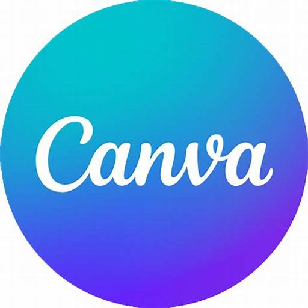

Skills and Tools
SKILLS
HTML
CSS
JavaScript
React

Node.js

Canva
Passionate about creating dynamic, user-friendly interfaces and robust backend systems. Bridging design and functionality to deliver seamless web solution.
Hi, I’m Rachelle Balaoro, I am passionate about discovering new ways technology can create meaningful impact. I enjoy tackling challenges, turning ideas into functional solutions, and exploring the limitless potential of innovation. My focus is on learning, growing, and contributing to projects that make a difference in people's lives.
Outside of my studies, I love crafting, painting, nature trips, drawing, and cooking. These activities help calm my mind, and walking and nature gazing give me a break from digital work, helping me stay inspired and creative. Having a balance in life, like ensuring you're not too drowned in your work, keeps me focused.
I'm always looking for new challenges to test my skills, and I enjoy collaborating with others to solve complex problems.
Through my journey, I am dedicated to improving and developing my abilities to make meaningful contributions in the future.
I blend technical precision with a flair for design, crafting projects that are both visually captivating and functionally seamless. My strength lies in uniting the elegance of frontend design with the power of backend engineering, creating solutions that impress in form and performance. I’m passionate about building experiences that are as beautiful as they are effective.
I have worked on a variety of personal projects, including developing both dynamic and static websites, creating robust applications, and building simple yet effective database solutions. These experiences have allowed me to apply my technical knowledge in real-world scenarios, deepen my understanding of web development, and strengthen my skills in database management. Through these projects, I have gained valuable hands-on experience, enabling me to continuously improve my problem-solving abilities and technical expertise.
I currently studying at Camarines Norte State College pursuing the course of Bachelor of Science in Information System
I studied at San Francisco National High School and Cobtinue my Senior High School year at Vinzons Pilot High School
My academic goal is to deepen my understanding of both the theoretical and practical aspects of my field. I aim to build a strong foundation in key concepts while also honing my skills through hands-on projects and real-world applications. I am committed to continuous learning and pushing the boundaries of what I know, striving to make meaningful contributions to my field. Ultimately, I aspire to pursue advanced studies and research opportunities that allow me to tackle complex challenges and drive innovation.
An app that helps users to have self confident and be pretty.
An app offering guided beauty session, life hacks and tips.
A personal portfolio showcasing my projects, skills, and resume.
A responsive resort website they can use for their resort business.
HTML
CSS
JavaScript
React
Node.js
Canva
If you have any questions or would like to work together, feel free to reach out!